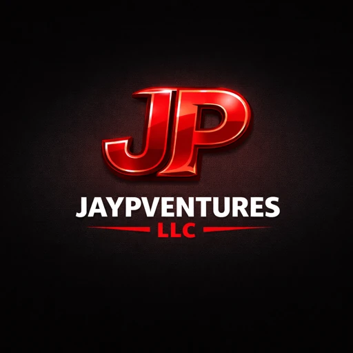

Operating Ventures With Clarity and Intent
JAYPVENTURES LLC fuses enterprise-grade governance with creative innovation. We design resilient systems for organizations and creators, engineered for trust, transparency, and adaptive oversight.
Creator-led initiatives operated under formal governance, with clear cadence, standards, and risk oversight.
View VenturesAudit-ready decision architecture, evidence capture, and transparent reporting across teams and tools.
View GovernanceServices
- Strategy & Governance: Future-proof operations with governance-by-design and disciplined risk architecture.
- Automation & AI Systems: Deploy secure, auditable automation and AI designed for scalable impact.
- Platforms & Prototyping: Rapid validation of new ideas, tools, and workflows with production-ready rigor.
- Compliance & Audit: Sustain regulatory alignment with continuous auditability.
Trust
- Governance frameworks are engineered for 2050 and beyond.
- Systems and processes are designed to withstand independent audit.
- Human and AI oversight adapt to evolving risks and opportunities.
- Responsible disclosure and incident response are standard practice.
Learn more: SECURITY.md | GOVERNANCE.md
Contact
Email: venture@jaypventuresllc.com
LinkedIn: linkedin.com/company/jaypventuresllc
Monetization Roadmap (2026)
Core Service Areas
Strategy & Governance
We build governance-by-design operating models that make innovation safe, auditable, and future-ready. Risk frameworks and decision architecture align leadership, policy, and technology so trust is built in from day one.
Automation & AI Systems
We deploy secure, explainable automation and AI systems that scale impact without sacrificing oversight. Every workflow is built for transparency, auditability, and continuous control.
Platforms & Prototyping
We turn ideas into validated systems quickly. Prototypes, internal tools, and creator platforms are engineered for resilience, adoption, and measurable outcomes.
Compliance & Audit
We operationalize compliance as a living system: controls, evidence, and continuous auditability that turn regulatory alignment into a competitive advantage.
Tiered Packages (Recommended)
- Audience: Creators, founders, and small teams who need a credible governance baseline.
- Scope: Foundational governance, light automation, compliance starter.
- Deliverables: 2-3 discovery workshops, risk register + control map, 1-2 high-impact automation wins, compliance foundation kit (policies + evidence checklist), 30-day support window.
- Pricing Range: $5,000-$9,000 (2-4 weeks).
- Audience: Scaling teams and early-stage enterprises preparing for operational maturity.
- Scope: Governance operating model + automation blueprint + validated prototype.
- Deliverables: Governance-by-design model, 90-180 day AI/automation roadmap, prototype or internal tool MVP, compliance readiness plan + audit trail setup, 60-day support window.
- Pricing Range: $15,000-$35,000 (6-10 weeks).
- Audience: Mid-market enterprises or regulated innovators with cross-team needs.
- Scope: Multi-system automation, platform prototype, compliance integration.
- Deliverables: Governance framework + policy library, AI system design + model risk controls, platform or tool prototype (2-3 sprints), continuous auditability pipeline, KPI dashboard, 90-day support window.
- Pricing Range: $40,000-$95,000 (10-16 weeks).
- Audience: Large enterprises and regulated industries with multi-division risk exposure.
- Scope: End-to-end governance, automation at scale, and audit-ready systems.
- Deliverables: Enterprise governance architecture, cross-department AI and automation implementation, platform build + integration roadmap, full compliance program + independent audit prep, executive reporting cadence.
- Pricing Range: $150,000-$300,000+ (multi-quarter engagement).
- Governance Oversight: $3,000-$8,000/month for policy updates, risk reviews, and advisory.
- Automation Care: $4,000-$12,000/month for maintenance, monitoring, and optimization.
- Compliance Maintenance: $5,000-$15,000/month for evidence capture, audit prep, and reporting.
Digital Revenue Ideas (Integrated)
- Governance Templates & Playbooks
- Offer: Policy templates, risk registers, control matrices, incident response playbooks.
- Integration: Included in Essential/Growth; offered as a paid add-on or standalone for self-serve buyers.
- AI Governance & Automation Courses
- Offer: Self-paced course with optional live cohorts and certification.
- Integration: Lead-in to Growth/Pro with preferred pricing for consulting clients and members.
- Membership: Governance Lab
- Offer: Monthly updates, office hours, compliance alerts, template drops, and peer forums.
- Integration: Ongoing support for Essential/Growth alumni and creators.
- Audit-Ready Toolkit (Premium Add-On)
- Offer: Evidence workflows, automated logs, audit dashboards, and checklists.
- Integration: Add-on to Pro/Enterprise; optional for Growth.
Wix Implementation Notes (Recommended)
- Site Structure: Home, Services (tiers), Governance Lab (membership), Resources (digital products), Trust & Governance (security, governance, policies), Contact/Book.
- Pricing & Payments: Use Wix Pricing Plans for tiers and membership, Wix Bookings for discovery calls and workshops, Wix Stores for templates and courses.
- Checkout UX: Add a Trust by Design notice near checkout and booking confirmations. Place SECURITY.md and GOVERNANCE.md links in the footer and Trust & Governance page.
- Analytics: Enable Wix Analytics and GA4; track plan views, checkout starts, booking completions, and resource downloads.
- Compliance: Add a privacy notice and cookie banner; retain consent and processing logs; include terms for digital product usage.
Marketing & Outreach (Governance-by-Design)
- Publish monthly Governance Lab Notes with real-world risk scenarios and solutions.
- Partner with legal, cybersecurity, and compliance firms for referrals.
- Run founder-led outreach in Louisville and the Midwest with governance-first AI messaging.
- Build anonymized case studies showing measurable risk reduction.
- Lead with auditability, transparency, and resilience in all messaging.
Homepage Snapshot (Compact)
Governance-by-Design for AI, Automation, and Compliance
JayPVentures LLC helps enterprises and creators build systems that scale without losing trust. Strategy, automation, prototyping, and auditability work in concert so innovation remains measurable, resilient, and safe.
Packages
- Essential: Governance baseline + quick-win automation.
- Growth: Governance operating model + prototype + 90-180 day roadmap.
- Pro: Multi-system automation + auditability pipeline.
- Enterprise: End-to-end governance and audit-ready implementation.
Digital Products
Templates, courses, and the Governance Lab membership extend our services and keep systems compliant between engagements.
Vertical Adaptations (Finance, Healthcare, SaaS, Creators)
- Emphasis: Model risk management, audit trails, and regulatory alignment.
- Add-ons: Control testing automation and evidence capture dashboards.
- Emphasis: Data handling safeguards, explainability, and clinical workflow integrity.
- Add-ons: Policy mapping to HIPAA-aligned controls and incident readiness.
- Emphasis: Scalable governance for product teams and customer trust.
- Add-ons: AI release gates, monitoring, and compliance-by-design playbooks.
- Emphasis: IP protection, revenue workflow automation, and transparent disclosure.
- Add-ons: Brand governance kit and licensing process templates.
Call to Action (Website Block)
Build systems you can prove.
Start with a governance baseline or book a discovery call to design the right roadmap. Every engagement includes audit-ready documentation and measurable outcomes.
CTA Variants
Audit-ready systems start with governance-by-design. We align AI, automation, and compliance under a single accountable roadmap.
Protect your work, automate revenue, and grow with transparency. Start with a lightweight governance baseline built for modern creators.